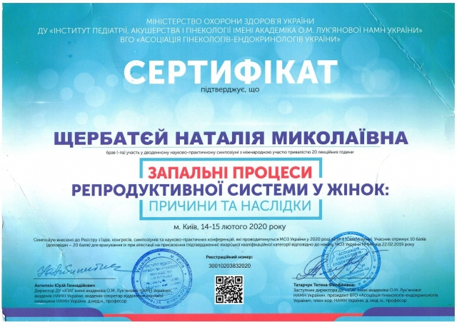

ЩЕРБАТЄЙ НАТАЛІЯ МИКОЛАЇВНА
Акушер-гінеколог, гінеколог-ендокринолог. Лікар УЗД . Лікар вищої кваліфікаційної категорії.
Член Асоціації акушерів – гінекологів України;
Член Асоціації гінекологів – ендокринологів України;
Член Української Асоціації кольпоскопії і цервікальної патології;
Член Асоціації перинатології.
Член Асоціації лікарів променової діагностики.
Член Міжнародної асоціації “The Fetal Medical Foundation”.
Учасник Програми французько-українського обміну фахівців і охорони здоров’я та фармації
Участь в Міжнародних та всеукраїнських медичних конференціях, майстер-класах, профілабах, воркшопах.
ОСВІТА
-
Державний заклад “Українська медична стоматологічна академія”, медичний факультет, за спеціальністю “Лікувальна справа“, кваліфікація “Лікар”, м. Полтава (1987 р);
Інтернатура за фахом “Акушерство і гінекологія“, Національний медичний університет ім. О.О. Богомольця. Присвоєно звання лікаря – спеціаліста за спеціальністю “Акушерство та гінекологія, м. Київ (1988 р);
Присвоєна вища категорія зі спеціальності “Акушерство та гінекологія”при Міністерстві здоров’я України, (2011 р.);
Спеціалізація з ультразвукової діагностики“ в Національній медичній академії післядипломної освіти ім. П.Л. Шупика, (2010 р);
- Спеціалізація за спеціальністю “Генетика медична”при Національній медичній академії післядипломної освіти ім. П.Л. Шупика, (2015 р).
- Присвоєна вища категорія за фахом “Ультразвукова діагностика”, (2018 р).
ПІСЛЯДИПЛОМНА ОСВІТА
ТУ « УЗ-ехоскопія в акушерстві та гінекології» НАПО ім. П. Л. Шупика рік.
ТУ «Актуальні питання репродуктивного здоров’я жінок» НАПО ім. П. Л. Шупика рік.
ТУ «Кольпоскопія та запальні захворювання в гінекології» НАПО ім. П.Л. Шупика рік.
Участь в науково – практичних роботах:
«14-й конгрес« The Fetal Medical Fundation », Кіпр;
«Актуальні питання акушерства та гінекології», 2009 рік.
“Актуальні питання ендокринної гінекології”, 2010 рік.
“Перинатальна медицина та безпечне материнство”, 2010 рік.
«Проблеми перехідного віку» МК «З турботою про жінку», рік.
“Радіологія в Україні”, 2013 рік.
“Актуальні питання охорони материнства і дитинства в Україні “, 2015 рік.
«Зустріч професіоналів »: допологовий період, пологи, післяпологовий період», 2015 рік.
“Від запліднення – до народження здорової дитини “, 2015 рік.
“Науково-практичний форум “IFRM 2015»: Передчасна яєчникова недостатність: вирок чи останній шанс? Ведення пацієнтів з СПКЯ перед ЕКО і страдегія менеджменту і консультацій після проведення циклу. Сучасні тренди в репродукції і гінекології. Ефективність допоміжних репродуктивних технологій. Погані відповідачі .. .PGS, PGD.
«Зустріч професіоналів »: материнсько-плодова медицина», 2016 рік.
“Впровадження сучасних досягнень медичної науки в практику охорони здоров’я України “, 2016 рік.
“Доплер в акушерстві та гінекології “, 2016 рік.
“Базова серцево-легенева реанімація в акушерстві та гінекології “, 2016 рік.
“Пологи в науковому контексті 2016 наука проти традиції “, 2016 рік.
“Проблемні питання акушерства, гінекології та репродуктології в сучасних умовах “, 2016 рік.
“Інновації в акушерстві та неонатології ». 2017 рік.“Восточноевропейские встречи профессионалов: материнско-плодовая медицина “, 2017 год.
“Eastern European Professional Meetings: maternal fetal medicine”, 2019 рік.
“Ефективний моніторинг стану плода “, 2019 рік.
